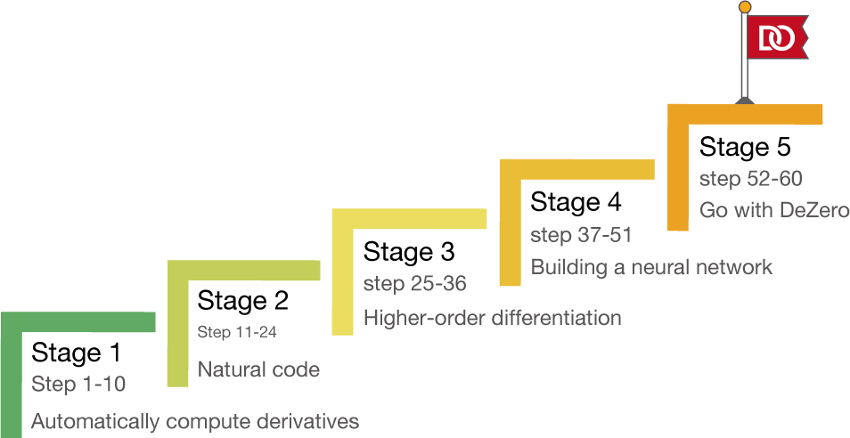

The true voyage of discovery consists not of going to new places, but of having a new pair of eyes.
――Marcel Proust (French writer, 1871–1922)
Today, deep learning is driving innovation in all areas of technology. Automatic driving of cars, automatic diagnosis of diseases, highly accurate machine translation, and advanced robot control. Stories that seem to have been portrayed in the world of fiction have only recently become more real, and even more so, we are seeing a number of examples that are moving in our society. Surprisingly, many of these fictional technologies were made possible (or are becoming possible) for the first time with deep learning. We are indeed living in real time, in an era where deep learning is changing the world.
As deep learning has flourished, a number of deep learning frameworks have been created: PyTorch, Chainer, TensorFlow, Caffe, and so on. There are various frameworks in this field, and they are being developed every day. Thanks to them, researchers and engineers around the world can use them to solve problems more efficiently. Deep learning frameworks are, so to speak, integral to supporting and advancing cutting edge technology.
Readers who pick up this book may have actually used the deep learning framework before. Nowadays, there is a wealth of information available and the execution environment has been developed. Therefore, writing code for deep learning is very easy to do. It is thanks to such frameworks that advanced technology can be achieved with only a few dozen (or even a few) lines of code.
So how does such a framework - a “real” framework that is used by many people and runs in many places - work? What kind of technology is used and what kind of ideas underlie it? With questions like that, a new journey can begin!
There are a lot of amazing technologies and interesting tricks in the deep learning framework. This book is designed to help you unravel them and make sure you understand the techniques correctly. And it’s there to give you a taste of the technical “fun” of it. To that end, the book proceeds with a “build from scratch” policy. We start from nothing and deepen our understanding by thinking and moving as we build. Through such an experience, we will get to the essence of the deep learning framework.
There will be a lot of learning in the process of creating the framework. I see, you can use this kind of technology! “How can such an idea be implemented in such a way! –such discoveries can’t be made simply by using existing tools. There are things you can understand because you make them. And because we make them, there are things we can see.
Let me give you one example. Some readers may think that a deep learning framework is just a library of layers and functions. In fact, the Deep Learning framework is bigger than that. It is a kind of programming language. In other words, it’s a programming language with differential computation capabilities (these days it’s also called a “differentiable programming language”). As you read this book, you will be able to see these things through the “process of building from scratch”.
In the early days of deep learning frameworks, there were significant differences between them. However, modern frameworks have come to a stage of maturity. In fact, popular frameworks such as PyTorch, Chainer, and TensorFlow are heading in the same direction (of course, they all have their own characteristics and different superficial interfaces, but their design philosophy is becoming more common). In this book, we have designed a minimal framework with an emphasis on the educational aspects of the book with that commonality in mind. We will call this framework “DeZero” after the title of the book. The logo was also created as follows.
Minimum： DeZero is a framework designed with ease of understanding as the first priority. The use of external libraries is kept to a minimum, and the internal code is kept to a minimum. Therefore, you won’t need a lot of time to understand the entire code of DeZero.
Pure Python： Deep learning frameworks are often implemented using multiple languages (e.g., Python and C++). DeZero, on the other hand, is implemented only in Python. So, if you are familiar with Python, you can read the contents of DeZero without stress. And because it’s pure Python, it’s easy to run DeZero on your smartphone or in the cloud using a service like Google Colaboratory.
Modern functionality： Modern frameworks such as PyTorch, Chainer, and TensorFlow have many features in common. For example, one of the most important common denominators is Define-by-Run, which is a mechanism for making computational “connections” between deep learning computations at the timing of the computation (which we’ll talk about in more detail in this article). The DeZero you create in this book is a Define-by-Run style framework. And we’ve designed it to have a lot in common with the modern framework.
DeZero is a small framework, but it’s complex enough inside. To deal with that complexity, this book divides the process of “building DeZero” into smaller pieces. Specifically, the curriculum is structured to build up DeZero little by little by accumulating a total of 60 steps.
For example, the first step in the book is to create a “variable” for DeZero. The code to be implemented there is only three lines of code. Then the next step is to add the code for the “function”. The content of each step is complete at the time, so you can actually put it into action. As such, we will incrementally (step-by-step) assemble DeZero and move it around to deepen our understanding.
The experience you will have in this book will also be good practice in software development. It’s the vicarious experience of building a complex system from scratch, and it’s a great subject for learning software development. With this in mind, the book also devotes a page to software development manners.
As mentioned earlier, the book consists of 60 steps in all. And those 60 steps are divided into five major stages, as shown in the following diagram. Here’s a brief introduction to what we do in each stage.

The first stage builds the foundation for DeZero. There, we deal with only simple problems and create a mechanism to automatically compute the derivative in the least amount of time (the “computation of the derivative” becomes clear as you read through the text).
In the second stage, we will extend DeZero so that you can use it with more natural code. By the end of the second stage, you’ll be able to write code using the usual Python syntax - if and for statements, etc.
In the third stage, we extend DeZero so that the second-order derivative is required. To do this, we need to extend DeZero so that we can do “reverse propagation of reverse propagation”. By understanding how it works, you will discover new possibilities for DeZero - and for modern frameworks.
In the fourth stage, we will prepare DeZero for the neural network. That makes it easy to build a neural network using DeZero.
The fifth and final stage adds essential deep learning features, such as GPU support and model saving and restoration. We will also work on developmental models such as CNN and RNN. While these are important problems for deep learning applications, they are not straightforward problems. However, with DeZero (which is Define-by-Run), you will find that such problems can be solved with simple code.
NOTE
The finished DeZero at the end of the book is registered in the PyPI (Python Package Index), which is a Python package repository. Now you can install DeZero from the command line: pip install dezero. Of course, it is also possible to develop a reader’s original framework based on the DeZero created in this book and publish it to the world.
The following is an overview of the book. To sum it up, this book is about creating the original DeZero framework from scratch, a small - yet powerful enough - framework that will be completed in 60 steps. It will deepen your knowledge of modern frameworks such as PyTorch, Chainer, and TensorFlow.
Finally, and again, the purpose of this book is not just to create an original framework called DeZero. More importantly, through the “journey” of creating DeZero, you will gain “new eyes” on modern deep learning frameworks. And with those “new eyes”, we can see the field of deep learning more widely and more deeply. The journey of discovering those “new eyes” must be of real value.
That’s all we need to do. So, let’s start the journey of building DeZero!
The code used in this document is available from the following GitHub repository
https://github.com/oreilly-japan/deep-learning-from-scratch-3